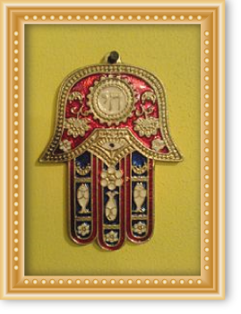
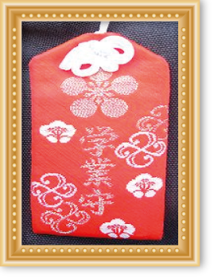
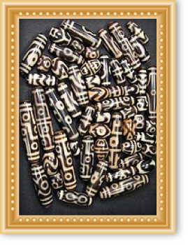
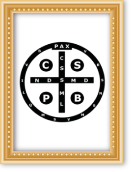
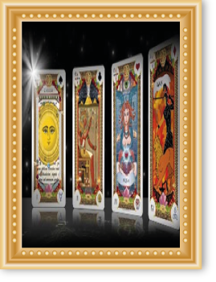
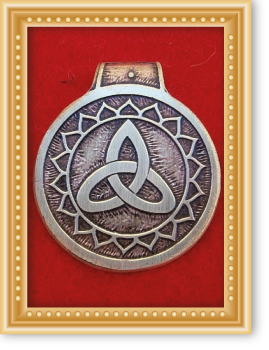
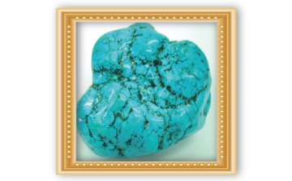
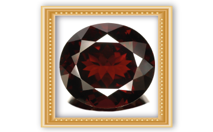

Quiromancia e quirología baseiam-se no fato de que você pode saber os eventos personalidade, saúde e passados através dos vestígios deixados nas palmas das mãos, a forma dos dedos, unhas, das montanhas que forma sob o nascimento do dedos, etc.
Quiromancia tem como objetivo, através deste conhecimento adquirido a partir da leitura mãos adivinhar o futuro destino da pessoa.
Milagres de cura e curas na tabela Santeria que é cercada por santos milagrosos.
Imposição de mãos para curar qualquer tipo de doença ou doença sem diagnóstico médico, desconhecida para a ciência humana, mas conhecido para a antiga magia e ocultismo.
Você. É preciso ter fé e confiança em nós mesmos e em nosso conhecimento ancestral. Vamos preparar o caminho que o levará para a sua felicidade plena. Tome as nossas mãos que não lhe permitirá seguir na angústia de ver seu relacionamento perdido, destruiu sua casa, o seu negócio, o seu futuro. Vamos mostrar-lhe que tudo é possível com a fé e convicção.
Santa Muerte protege e cuida de todos os danos e obstáculo que vem à sua maneira como o seu poder é extremamente grande. Confiança ...

O velomancia é um estudo de práticas de previsão, navegando através da queda e soltar movimento chama é interpretada. É um tipo de adivinhação como poderia ser o oráculo. É algo muito concreto, que serve exclusivamente a questões específicas. Em outras vezes, também pode ser utilizada como um complemento de qualquer outro elemento ou oferta ritual.
É sempre mais produtivo, por exemplo, um spread com uma vela e que acompanha energia, funciona como um complemento.
O crucifixo é considerado pela tradição católica como uma defesa contra forças demoníacas, eo sinal sagrado de Cristo sobre o mal como o vencedor.

O Khamsa ou Hamsa, também conhecida como a mão de Fatima ou de Miriam mostrado com a forma da palma da mão e é amplamente utilizado no Oriente Médio e os países do Magrebe do Norte de África.
A mão de Fatima é usado principalmente como jóias ou pendurados em portas e janelas para afastar o mau-olhado.

Nazar é um amuleto de proteção contra "o olho mau" ou más intenções que outros possam nos querem. Ele é usado em todo o mundo, especialmente na Turquia, Irã e Grécia.
Você pode encontrá-lo em colguijes decoração ou roupas e acessórios. Algumas pessoas se referem a esse talismã também como "Blue Eye"

O omamori, de origem japonesa, é um amuleto de proteção contra o mal. Omamori palavra significa proteção.
Ele é feito de tecido e papel dentro ou pedaços de madeira com parcelas ou desejos escritos são santificados. É dito ser azarão e encontrar omamori aberto dentro.

Ágata esculpida em pedra, estes amuletos são de origem antiga e são usados em colares e pulseiras e são considerados como portadores de benefício espiritual.
Culturas tibetanas coberta com pó medicinal que adere aos seus relevos para transmitir seu poder benfeitor.

Medalhas católicas, incluindo o Vade Retro Satana incluindo a fórmula para afastar Satanás são muito populares e têm mesmo sido utilizado abaladas pelo Papa Bento XVI.
O Vade Retro Satana é um charme que também é utilizado pela voz humana. Mencione as palavras alienar o diabo e exorcismo é usado na prática.

Letras místicas proteger seu portador de acordo com os quatro elementos astrológicos são universais ar (que representa o conhecimento e sabedoria), Terra (levando fertilidade e prosperidade resultado do nosso trabalho), água (que controla nossas emoções e dá à luz a nossa beleza) eo fogo (que nos protege dos más intenções e nos dá força e coragem para enfrentar qualquer situação.
O Cartões místico pode ser usado com feitiços ou levar com Letras para proteção.
Coloque-os debaixo do travesseiro vai responder a perguntas através de nossos sonhos.

Está provado que os talismãs são ferramentas espirituais que ajudam a converter a energia negativa em energia positiva. Isso faz com que uma ação de lavagem que re revigora a energia estagnada e negativo, e se transforma em energia nova e positiva. Talismãs como orgone são feitas de resina orgânica e aparas de metal inorgânicos.
Outros talismãs poderosos são aqueles que contêm cristais de quartzo, material de poderosa para a energia limpa e intenções de armazenamento. Além disso, existem outras gemas que influenciam as propriedades de talismãs. Qualquer gema terá um efeito poderoso sobre o utilizador, uma vez que são dispositivos de alta energia.
Exemplos de talismãs poderosos
Turquoise - Esta pedra é um poderoso, de múltiplos propósitos que vão desde a cura para aumentar a criatividade

Turmalina preta - Esta pedra repele a energia psíquica negativa e mantém você fundamentada
.

Hematita - Semelhante ao turmalina negra, também ajuda a aumentar a auto-confiança
.

quartzo rosa e Rhodochrosite - Para atrair amor romântico
.

Lapis Lazuli - Para aumentar seus poderes psíquicos e dar clareza espiritual. Muito útil quando se trabalha com feitiços em casa.

Garnet - Atrai dinheiro, aumentar o sucesso do negócio e alivia a depressão
.

pingentes orgone e encantos pode ajudá-lo a aumentar seus poderes mágicos como a energia positiva em torno de você.
Links:
http://petitabruixa.blogspot.pe/2006/06/baos-con-sal-limpieza-y-proteccin.html
http://contemplandoelvacio.blogspot.pe/2012/07/limpieza-energetica-del-huevo_24.html
http://tagomago.galeon.com/aficiones1988819.html

consultas locais Internacional
EMAIL: santerosgiordanoyverenice@gmail.com
Direto SANTERO GIORDANO E verenice
Telemóvel: (00511) - 935 821 296 / (00511) - 7330790